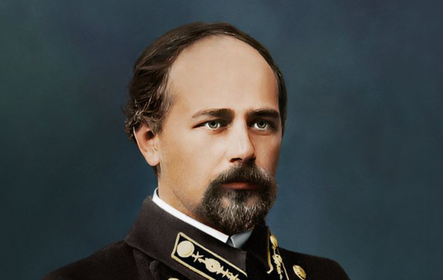
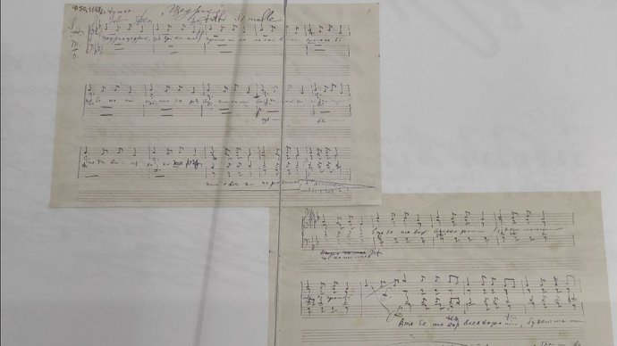
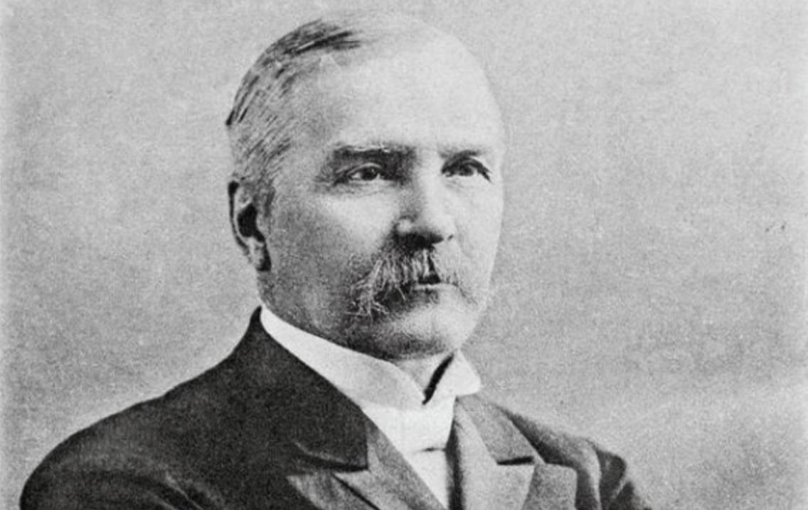
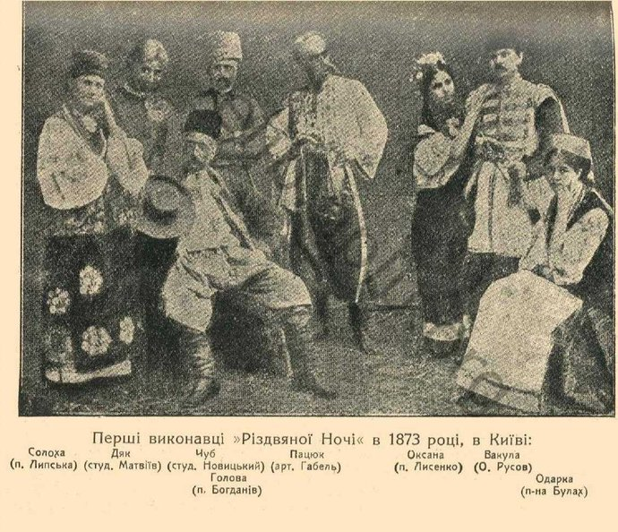
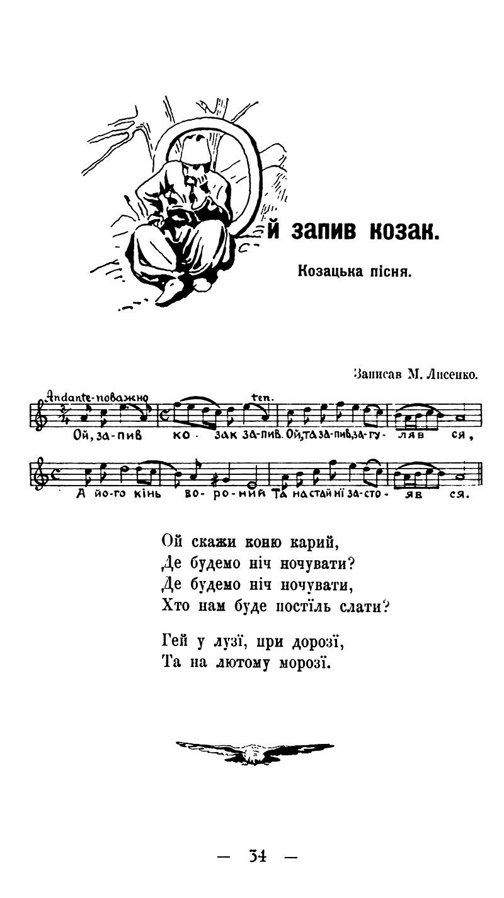
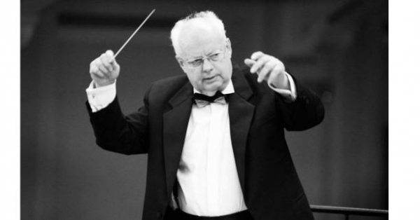
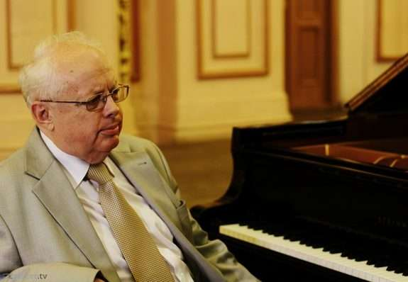
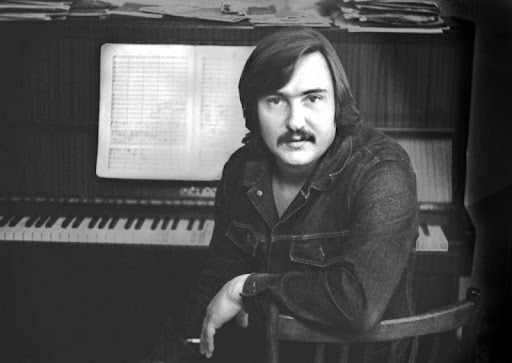
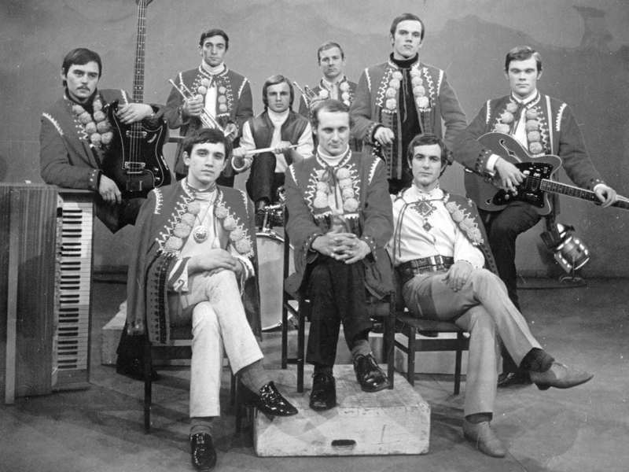

Вступ
Україна — Батьківщина багатьох талановитих людей, які зробили значний внесок у формування світового мистецького
простору.
Українські композитори завжди відрізнялися своєю самобутністю: вони поєднували у своїй музиці український
фольклор і нові європейські тенденції, досліджували шляхи розвитку музики через призму історії свого народу.
Коли ми шукаємо українське начало в різних галузях творчості людського генія, то в кожній з них насамперед хочемо знайти
свого Григорія Сковороду. І коли йдеться про музичну культуру, то переконуємося, що основи її національного стилю
закладалися тоді, коли здавалося, наш народ переживав найважчі часи свого поступу.
Українські композитори — унікальне явище у світовій музичній культурі.
Найперше тому, що майже всі наші видатні музиканти були митцями не світськими, а духовними. I хоч писали світські твори,
що за майстерністю та змістовністю не поступаються світовим шедеврам, ця творчість була для них другорядною. Вони
створили цілий пласт духовного хорового мистецтва, неперевершеного у красі й досконалості. Це досягнення, безумовно, —
плід понад тисячолітньої християнської культури найбільшої (за кількістю храмів і парафій) православної країни.
Українські генії були нащадками найспівочішої нації, що чисельністю пісень, колядок і кантів перевершує всі народи
світу.
Микола Леонтович

Леонто́вич Мико́ла Дми́трович (13 грудня 1877, село Монастирок, Брацлавський повіт, Подільська губернія, Російська
імперія — 23 січня 1921, село Марківка, Гайсинський повіт, Подільська губернія, Українська ССР, СРСР) — український
композитор, хоровий диригент, піаніст, педагог, збирач музичного фольклору, громадський діяч.
Автор широковідомих хорових обробок українських народних пісень «Щедрик», «Дударик», «Козака несуть», «Ой з-за гори
кам'яної» та інших. Його різдвяна щедрівка «Щедрик» перекладена багатьма мовами і відома у англомовному світі як Carol
of the Bells.

Леонтовичу, як і багатьом тогочасним українським композиторам — Миколі Лисенку, Кирилу Стеценку, Якову Степовому —
притаманне було поєднання творчої, педагогічної й виконавської (диригентсько-хорової) діяльності. Понад двадцять років
Микола Леонтович віддав роботі вчителя співів у школах різних міст: Тиврова, Вінниці, Гришиного (нині Покровська),
Тульчина та Києва. Як композитор, він був ще й добре обізнаний зі станом викладання співів у школах, з художнім рівнем
учнівських хорів. Чимало своїх сил він віддавав педагогічній праці в учительській семінарії, Музично-драматичному
інституті імені Миколи Лисенка та на диригентських і театральних курсах, а ще на курсах працівників дошкільного
виховання чи навіть у робітничих гуртках і школах.
Список творів:
- опера "На Русалчин Великдень" (за казкою Бориса Грінченка);
-
хори на слова українських поетів:
- "Льодолом" на слова Володимира Сосюри,
- "Літні тони" на слова Григорія Чупринки,
- "Моя пісня" на слова І.Білиловського,
- "Легенда" на слова Миколи Вороного;
-
композиції на літургійні тексти:
- Літургія святого Івана Златоусого,
- Молебень,
- частини Всенощної;
- хорові обробки українських народних пісень, понад 150.
Микола Лисенко

Мико́ла Віта́лійович Ли́сенко (10 (22) березня 1842, Гриньки — 24 жовтня (6 листопада) 1912, Київ) — український
композитор, піаніст, диригент, педагог, збирач пісенного фольклору, громадський діяч.
До найвідоміших творів Лисенка належать музика гімнів «Молитва за Україну» та «Вічний революціонер», котрі зокрема
виконував хор Кирила Стеценка під час Свята Злуки, опери «Тарас Бульба», «Наталка Полтавка» та інші. Лисенко створив
численні аранжування народної музики для голосу й фортепіано, для хору та мішаного складу, а також написав значну
кількість творів на слова Тараса Шевченка.
Миколу Лисенка заслужено вважають засновником української національної музики. Суттєву роль у цьому відіграла як його
композиторська, так і етнографічна діяльність.
Етнографічна спадщина Лисенка — запис весільного обряду (з текстом і музикою) у Переяславському повіті, запис дум і
пісень кобзаря О. Вересая, розвідки «рос. Характеристика музыкальных особенностей малорусских дум и песен, исполняемых
кобзарем Остапом Вересаем» (1874 рік), «Про торбан і музику пісень Відорта» (1892 рік), «Народні музичні струменти на
Вкраїні» (1894 рік).

Список творів
Сценічні твори
Опери:
- «Андрашіада» (лібрето Михайла Старицького і Михайла Драгоманова, 1866-77),
- «Чорноморці» (лібрето Михайла Старицького за п'єсою Якова Кухаренка, 1872),
- «Різдвяна ніч» (лібрето Михайла Старицького за повістю Миколи Гоголя, 1874),
- «Утоплена» (лібрето Михайла Старицького за повістю Миколи Гоголя «Майська ніч», 1883),
- «Наталка Полтавка» (п'єса Івана Котляревського, вокальні номери аранжував Микола Лисенко, 1889),
- «Тарас Бульба» (лібрето Михайла Старицького за повістю Миколи Гоголя, 1890),
- «Відьма» (текст Любові Яновської, 1901, незакінчена),
- «Сапфо» (лібрето Людмили Старицької-Черняхівської, 1896—1904),
- «Енеїда» (лібрето Миколи Садовського за Іваном Котляревським, 1910),
- опера-хвилинка «Ноктюрн» (лібрето Людмили Старицької-Черняхівської, 1912).
Дитячі опери:
- «Коза-дереза» (1888),
- «Пан Коцький» (1891),
- «Зима і Весна, або Снігова краля», (1892) — всі 3 на лібрето Дніпрової Чайки (Людмили Василевської).
Екранізація сценічних творів
За оперою «Наталка Полтавка» знято однойменну кінокартину у 1936 році, і телефільм у 1978 році.
Для симфонічного оркестру:
- Менует і Адажіо, Увертюра на тему української народної пісні «Ой запив козак, запив» (всі 1869, рукописи не знайдено),
- Симфонія (ч. І, 1869),
- Фантазія «Український козак-шумка» (1872).

Мирослав Скорик

Миросла́в Миха́йлович Ско́рик (13 липня 1938, Львів, Львівське воєводство, Польська республіка — 1 червня 2020, Київ,
Україна) — видатний український композитор і музикознавець, Герой України (2008), народний артист України (1988),
заслужений діяч мистецтв УРСР (1969), лауреат Національної премії України імені Тараса Шевченка та Республіканської
премії імені Миколи Острозького (1968), кандидат мистецтвознавства, співголова Спілки композиторів України (2006—2010),
художній керівник Київської опери (2011—2016), Національна легенда України (2021, посмертно). Внучатий небіж Соломії
Крушельницької.
Твори Мирослава Скорика регулярно виконують в Україні, інших пострадянських країнах, а також у Німеччині, Франції,
Австрії, Нідерландах, Болгарії, Чехії, Словаччині, Польщі, Великій Британії, США, Канаді, Австралії. Композитор часто
виступав як диригент і піаніст із виконанням власних творів.

Список творів
Музично-театральні твори:
- «Каменярі» (балет, за І. Франком, 1967),
- «0:0 на нашу користь» (музична комедія, лібр. Віккерса та О. Каневського, 1969),
- «Мойсей» (опера, лібрето Б. Стельмаха за І. Франком, 2001),
- «Повернення Баттерфляй» (балет, Скорик-Пуччіні, 2006).
Вокально-симфонічні твори:
- «Весна» — кантата для солістів, хору та симфонічного оркестру на вірші І. Франка (1960),
- «Людина» — кантата для солістів, хору та симфонічного оркестру на вірші Е. Межелайтіса (1964),
- поема-кантата «Гамалія» (сл. Т. Шевченка, 2003),
- «Три українські весільні пісні» для голосу та симфонічного оркестру (нар. слова, 1974).
Концерти для інструментів соло з оркестром
- 3 для фортепіано з оркестром — № 1 («Юнацький», 1977), № 2 (1982), № 3 (1995),
- 9 для скрипки з оркестром — № 1 (1969), № 2 (1990), № 3 (2001), № 4 (2002), № 5 (2004), № 6 (2009), № 7 (2011), № 8
«Allusion to Chopin» (2011), № 9 (2014),
- «Мелодія» для скрипки з оркестром,
- Концерт для віолончелі з оркестром (1983).
Володимир Івасюк

Володи́мир Миха́йлович Івасю́к (4 березня 1949, Кіцмань, Чернівецька область, Українська РСР, СРСР — 24/27 квітня, 1979,
Брюховицький ліс під Львовом, УРСР, СРСР) — український композитор-виконавець, музикант, мультиінструменталіст (володів
кількома музичними інструментами: скрипка, фортепіано, віолончель, гітара), поет. Герой України (2009, посмертно).Свою
одну з перших пісень він присвятив своїй матері,яку він дуже любив. Лауреат Національної премії імені Тараса Шевченка
(1994, посмертно), Республіканської премії ЛКСМУ імені Миколи Островського (1988, посмертно) та номінації «За внесок у
розвиток музичної культури України XX століття» (2001, посмертно). Син письменника Михайла Івасюка.
Один із основоположників української естрадної музики. Автор 107 пісень, 53 інструментальних творів, музики до кількох
вистав. Професійний лікар, скрипаль, грав на фортепіано, віолончелі, гітарі, виконавець пісень, живописець.
18 травня 1979 року його знайдено повішеним у Брюховицькому лісі під Львовом. Версію про самогубство було піддано
сумніву і розслідувано додатково вже у роки незалежності.

Список творів
Пісні на власні слова:
- «Відлітали журавлі»,
- «Я піду в далекі гори»,
- «Червона рута»,
- «Водограй»,
- «Пісня буде поміж нас»,
- «Два перстені».
Інструментальні твори:
- Сюїта-варіації на тему української народної пісні «Сухая верба» (1977),
- Сюїта-варіації для камерного оркестру (1977),
- «Осіння картинка» — для віолончелі,
- три п'єси для фортепіано.
Конституцією загальнонаціональними символами України визначені прапор, герб і гімн. Проте важко не погодитися, що код
нації формують набагато більше складових: наша історія, традиції, поезія та музика, архітектурні та художні пам’ятки,
визначні місця та постаті, якими ми особливо пишаємося та завдяки яким гордо заявляємо про себе на міжнародній арені.
Підсумовуючи вищенаведене, можна дійти висновку, що для становлення та розвитку національної музичної культури України
XIX століття особливого значення набула українська опера, передумовою якої була народна музика національно-історичного
спрямування.
До того ж фольклорні основи слугували формуванню деяких професійних жанрів, зокрема опери та інструментальних п’єс.
Отже, слід зазначити українських композиторів, які зробили той значний внесок у розвиток українського оперного мистецтва
та увійшли до історії світової музики.